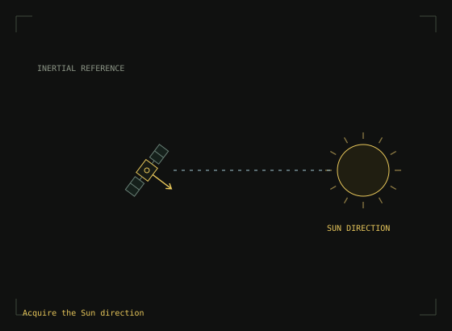
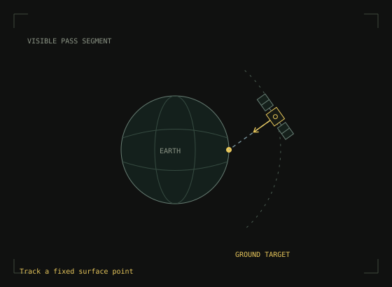
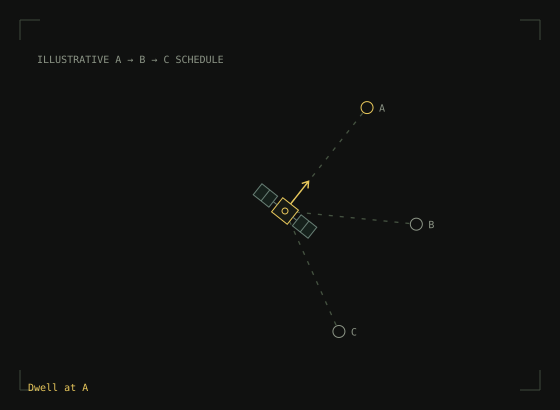
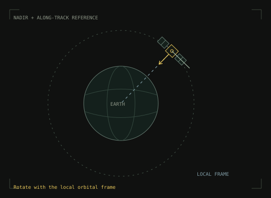

Missions description
Missions:
ways to define a target
The same attitude-control system faces different reference motions
Four reference-behavior sketches. Geometry and timing are illustrative. These are not trained-agent demonstration rollouts.
01 / sun_pointing
Sun pointing
Keep a selected body axis aligned with the Sun direction.
This serves two purposes: normal Sun-tracking training scenario and SAFE_SUN supervisor target. NASA safe-mode designs commonly use coarse Sun-pointing to achieve a thermally safe, power-positive attitude. In the project, Sun measurements and a Sun-pointing reference also connect to supervisory safe-mode behavior.
The reference is a direction in space rather than a point on Earth. This sketch shows acquisition followed by a hold, it leaves rotation about that direction unspecified. During eclipse, the supervisor must understand that Sun unavailable because geometry instead of diagnosing a dead Sun sensor.
Code · guidance for this scenario link pending

02 / ground_target
Ground-target tracking
Follow a fixed location on Earth as the spacecraft passes overhead.
The body reference changes throughout the pass even though the surface target stays fixed. A camera boresight, for example body +Z, points from spacecraft position to an Earth-fixed target:
The big difference from LVLH is that both attitude and angular rate vary substantially throughout the pass. Continuous references and mission phases connect changing geometry to wheel control. During training some episodes contain small or zero time when a target is in LOS. To facilitate initial phasese of training there is a special "pass_centered" in GroundPassResetMode that keeps only episodes when a ground target is in LOS.
Code · guidance for this scenario link pending

03 / scheduled_slew
Scheduled slews
Move between a sequence of pointing references, with an accent at each one.
This mission can be selfsufficient, but can also help a lot to elaborate a useful behavior when rather than suddenly jumping the guidance system produce a feasible slew trajectory with maximum angular velocity, maximum angular acceleration. The target trajectory can use a trapezoidal angular-rate profile: accelerate, constant-rate, decelerate, settle. The sketch demonstrates how this can looks like: a satelliete smoothly move its pointer from a target to another while fixing at each target for a while.
This view makes the distinction between target selection, reference shaping, and controller response visible. A useful experiment would check settling before the next scheduled maneuver, along with actuator saturation.
Code · guidance for this scenario link pending

04 / nadir_lvlh
Nadir / LVLH
Keep one axis directed toward Earth while following the local orbital frame.
Nadir fixes an Earth-facing direction. The local vertical/local horizontal frame also determines the remaining orientation relative to the orbit; the second line indicates the along-track direction in this planar sketch.
The project uses a nadir/LVLH fallback for ground-station guidance: while ground target is lost from LOS a mission manager changes mission to LVLH. Holding this reference in orbit requires a changing inertial attitude; it is not the same as holding one inertial quaternion.
Code · guidance for this scenario link pending

See the experiment evidence ↗How guidance connects to control ↗